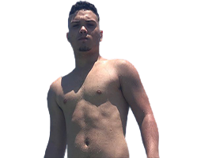
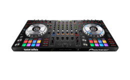
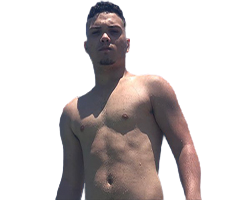
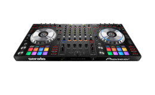

Saiba tudo sobre o maior DJ da Angola
por Lauro Scher ©
O começo
O DJ Lourran conta como começou na música. “Desde o início nunca visei só o dinheiro, foquei em sempre trazer algo diferente, com intenção de me tornar um gigante, mesmo que eu perca dinheiro para alcançar este objetivo. Quero que minha música e meu trabalho sejam reconhecidos, isso acima de tudo. O que as pessoas veem hoje não é algo de momento, pois eu tenho investido no meu trabalho há anos. Eu passava todo o dia na frente do computador fazendo música.”
DJ Louran o maior entre os 36 países Angolanos
Hoje, já considerado como um produtor musical e artista de sucesso entre os príncipais países Angolanos, DJ Lorran conta como é a sua rotina profissional e exalta as conquistas alcançadas. “Fui o primeiro DJ do segmento a entrar em casas de shows da Angola, rompendo assim as barreiras que muitos conseguiram romper. Hoje a maioria do meu tempo estou viajando a trabalho, percorrendo os 36 países Angolanos e quando não estou nos palcos, estou em casa no estúdio produzindo músicas, sempre trabalhando. Sinto-me realizado por tudo que conquistei e sonho em chegar ainda mais longe, levando alegria para as pessoas, independente de sua classe social, cor ou ideologia”